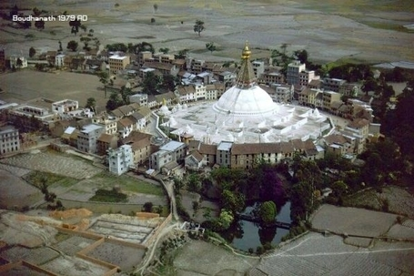
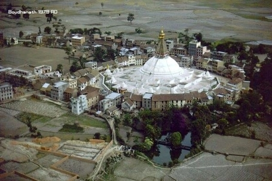

This is also known as the monkey temple. There are many stairs, so you will need to be able to walk a lot of stairs if you plan to visit. There are monkeys all around the area. You can take pictures, but best to still keep your distance. I was overall a very neat experience.
 

This buddhist stupa seems to have an awesome energy. One feels calm and peaceful in its serene environment. I first visited this place in May 2012 and then once again last year. The impressions I carried with me from my first visit remained deeply engrained in me and brought me back. To witness the Tibetans monks and lay people praying there, circumambulating the stupa with deep dignity and amazing faith is an experience in itself.
Although Durbar Square in Patan is not as big as the squares in Kathmandu and Badgang, the old buildings are more dense and concentrated, and its architectural art is also very superb and exquisite. It occupies a place in the history of world architecture and is called "open-air museum". There is a market selling souvenirs and local specialties near the square, so you can visit and play together. Unfortunately, on April 25, 2015, a magnitude 8.1 earthquake occurred in Nepal, and most of the buildings in Patan Durbar Square were damaged. Among them, the Khalisanka Temple and the Charnarayan Temple completely collapsed, and the Yuganalandra. The top statue of Mara King Pillar was dropped and damaged.
Godawari - one of my Favorite Place. It is one of the favorite places for picnic, trekking and hiking destination situated on the foot of Pulchowki hill in Lalitpur District of Central Nepal. Since we didn’t have enough time to go out of Kathmandu Valley due to work we decided to Visit Godawari (good for one day trip) and one of the best destinations for recreational activities, rich natural sceneries, greeneries of trees and peaceful environment. We can reach there by any means of transportation like cars, bikes and nowadays lots of micro buses are available on the way so people can now easily reach there. One can really enjoy the view of small villages and their cultures along the way.
Located in the mid-western part of Nepal, Rukum is one of the many districts which has not been fully explored and promoted as a tourist attraction. From high hills, valleys, dense forest, natural vegetation, diverse culture, famous trekking routes, rich history, Rukum has all of it. The administrative headquarter of Rukum is Musikot city. It covers an area of 2,877 square kilometers. Before the division of the country to the province, Rukum was a big district with both hills and mountains. Now, some part of the district lies in the Karnali Pardesh and some in the Province No. 5.
Lamjung my birth place 17th, Feb 1998. The beauty, the auroma, the people, the tradion there is nothing that i won't miss about it. My chilhood was full of joy and fun. Since, I moved to city areas for my further studies I really missed about my born place. Fortunatly, every time when I get chance I direct get the idea of going to my home. And that feeling is compeletly priceless. Really love it.!!
Hello!! there I am the editor.


Let's be friend. You can add me on following social media.